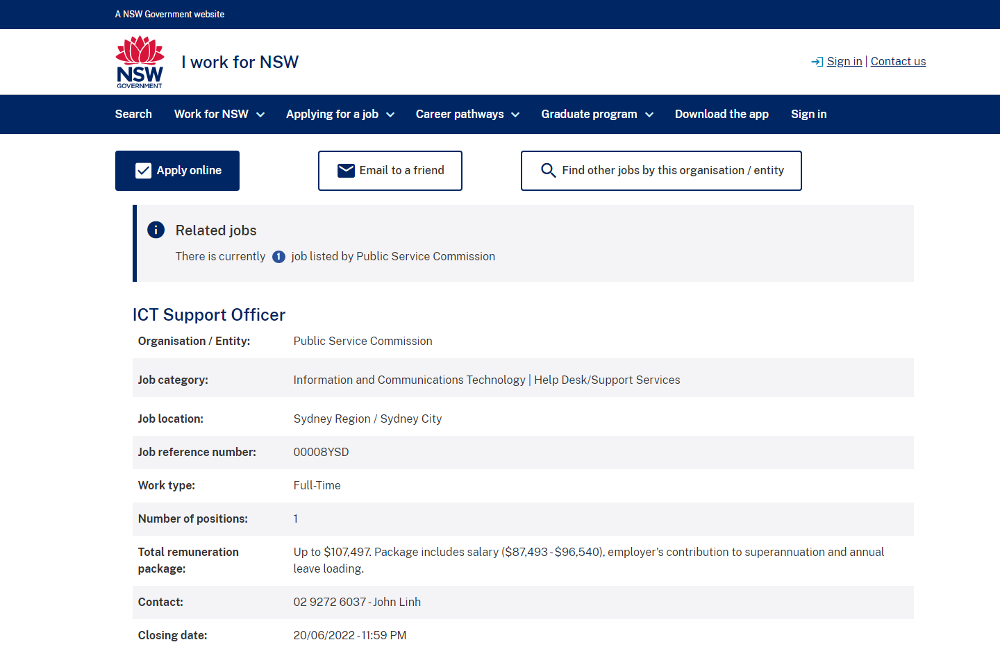

Ideal Job
Job information
ICT Support Officer
Link to the original joblisting

Position Description
A role with the ICT and Business Services team of the NSW Public Services Commission as an ICT Support Officer, providing support for both software and hardware to the Public Services Commission.
Skills, qualifications and experience required
- Strong customer service skills
- Experience with troubleshooting in both software and hardware
- Strong communication skills, both written and verbal
- Strong incident and time management skills regarding time critical issues and competing priorities
- Relevent tertiary qualifications or industry experience
- Demonstrated experience in service desk environment with industry recognised Service Desk systems.
Skills, qualifications and experience I have
- Decent customer service skills
- Some experience troubleshooting personal computers
- Decent communication skills
- No current industry relevent qualifications
- No experience in service desk positions or with industry relevent service desk systems.
What's my plan?
- Complete course - Batchelors in IT
- Find an industry related job - entry level, build experience
- Work on communication skills and time management skills
Return to Index
Index